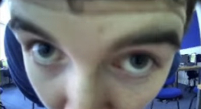

<!DOCTYPE html>
<html>
  <head>
    <title>Strode College Map</title>
    <link rel="stylesheet" href="https://unpkg.com/leaflet@1.7.1/dist/leaflet.css"
   integrity="sha512-xodZBNTC5n17Xt2atTPuE1HxjVMSvLVW9ocqUKLsCC5CXdbqCmblAshOMAS6/keqq/sMZMZ19scR4PsZChSR7A=="
   crossorigin=""/>
    <!-- Make sure you put this AFTER Leaflet's CSS -->
   <script src="https://unpkg.com/leaflet@1.7.1/dist/leaflet.js"
   integrity="sha512-XQoYMqMTK8LvdxXYG3nZ448hOEQiglfqkJs1NOQV44cWnUrBc8PkAOcXy20w0vlaXaVUearIOBhiXZ5V3ynxwA=="
   crossorigin=""></script>
  </head>
  <body>
    <div id="map" style="width: 100%; height: 800px;"></div>
    <script>
    var mymap = L.map('map').setView([51.12983, -2.73341], 15);
      
    L.tileLayer('https://{s}.tile.openstreetmap.org/{z}/{x}/{y}.png', {
	  	attribution: '&copy; <a href="http://osm.org/copyright">OpenStreetMap</a> contributors'
    }).addTo(mymap);
	var marker = L.marker([51.12983, -2.73341]).addTo(mymap);
	marker.bindPopup("<p><b>C Block</b></p><br>T-Level Digital");
	marker.bindPopup("<b>C Block</b><br>T-Level Digital").openPopup();
	    
	var marker1 = L.marker([51.129667, -2.732560]).addTo(mymap);
	//marker1.bindPopup("<p><b>C Block</b></p><br>T-Level Digital");
	marker1.bindPopup("<b>M Block</b><br>T-Level Digital").openPopup();
	    
	var marker2 = L.marker([51.150157, -2.719992]).addTo(mymap);
	marker2.bindPopup("<p><b>Coreys House</b></p><br>coreyhowe");
	    
	var marker3 = L.marker([51.043841, -2.819460]).addTo(mymap);
	marker3.bindPopup("<p><b>Adams House</b></p><br>adamjone");
	    
	var marker4 = L.marker([51.992605, 0.857395]).addTo(mymap);
	marker4.bindPopup("<p><b>funny name</b></p><br>adamjonelikethisstreet");
	
    </script>
  </body>    
</html>
